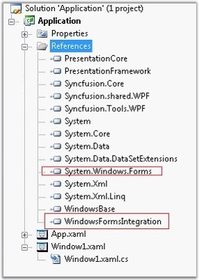

There are some situations in which we will need to host some Windows Forms controls in our WPF application. This section guides you on this scenario.
For instance, if we have to host a WF button inside a WPF application, follow the below guidelines.
Step 1 – You need to add a HWND to your WPF applications in UI, to host Windows Form controls, a default implementation that is suitable for many common needs and it is called as WindowsFormsHost. To use this class, we need to include System.Windows.Forms and WindowsFormsIntegration assemblies which is provided by the Microsoft.

Figure 1189:System.Windows.Forms and WindowsFormsIntegration assemblies referenced to host Windows Forms Controls
· System.Windows.Forms - Deals with Windows Form controls
· WindowsFormsIntegration - Lets you to add HWND to WPF applications and enables interoperability for WPF with Windows Forms.
Step 2 - In order to use these assemblies inside your WPF application, we need to include the namespaces in to your XAML application.
|
[XAML]
<Window x:Class="Application.Window1" xmlns="http://schemas.microsoft.com/winfx/2006/xaml/presentation" xmlns:x="http://schemas.microsoft.com/winfx/2006/xaml" xmlns:wfi="clr-namespace:System.Windows.Forms.Integration;assembly=WindowsFormsIntegration" xmlns:wf="clr-namespace:System.Windows.Forms;assembly=System.Windows.Forms" Title="WFH in a WPF application" > </Window> |
Step 3 - WindowsFormsHost can contain controls from Windows Forms as its children. For example, to add a WF Button to an application and set a name for it, use the following code.
|
[XAML]
<Window x:Class="Application .Window1" xmlns="http://schemas.microsoft.com/winfx/2006/xaml/presentation" xmlns:x="http://schemas.microsoft.com/winfx/2006/xaml" xmlns:wfi="clr-namespace:System.Windows.Forms.Integration;assembly=WindowsFormsIntegration" xmlns:wf="clr-namespace:System.Windows.Forms;assembly=System.Windows.Forms" Title="WFH in a WPF application"> <Grid> <wfi:WindowsFormsHost Width="250" Height="150"> <wf:Button x:Name="buttonone" /> </wfi:WindowsFormsHost> </Grid> </Window> |
Additional Note – Using WFH in a Syncfusion Control
In this section, we will give a code snippet to add the WFH to a Syncfusion WPF control; Docking Manager for example.
In order to use WFH element in a WPF application, we need to set UseInteropCompatibilityMode property to true to make the Docking Manager to be compatible with the WFH.
|
[XAML]
<Window x:Class="WpfApplication11.Window1" xmlns="http://schemas.microsoft.com/winfx/2006/xaml/presentation" xmlns:x="http://schemas.microsoft.com/winfx/2006/xaml" xmlns:wfi="clr-namespace:System.Windows.Forms.Integration;assembly=WindowsFormsIntegration" xmlns:wf="clr-namespace:System.Windows.Forms;assembly=System.Windows.Forms" xmlns:syncfusion="http://schemas.syncfusion.com/wpf" Title="Window1" Height="300" Width="300"> <Grid> <!--Set UseInteropCompatibilityMode to True in Docking Manager to use WFH compatible Docking Manager--> <syncfusion:DockingManager UseInteropCompatibilityMode="True">
<StackPanel syncfusion:DockingManager.State="Dock" syncfusion:DockingManager.SideInDockedMode="Left"> <!--Adding WFH in the Dock Panel--> <wfi:WindowsFormsHost Height="Auto" Width="Auto"> <!--Adding WF Button to it--> <wf:Button x:Name="Button1" Text="WFH Button"/> </wfi:WindowsFormsHost> </StackPanel> </syncfusion:DockingManager> </Grid> </Window> |
Constraints in hosting a WFH in a WPF application
There are some complexities involved when a Windows Forms control is hosted in a WPF control. To explain this, we have a sample using the standard Microsoft WPF Controls with WFH in it. Following are the limitations of the WPF framework with a Windows Forms Host which is clearly explained in the sample.
· In a WPF application, when you add a Windows Forms Host control, it will always render at the top layer of the WPF element, which is the default behavior of the WPF Framework.
· WFH in WPF cannot display a transparent pop up.
· In the sample, MouseLeave event is raised for WPF border when we move the mouse over its child ( WFH )
· WFH doesn't support animation;
· Doesn't support routed events.
You can download the sample from the below mentioned location to see the behavior of a WFH in standard Microsoft WPF controls.
http://www.syncfusion.com/support/user/uploads/WPF_WFH_Problem-1819107450.zip